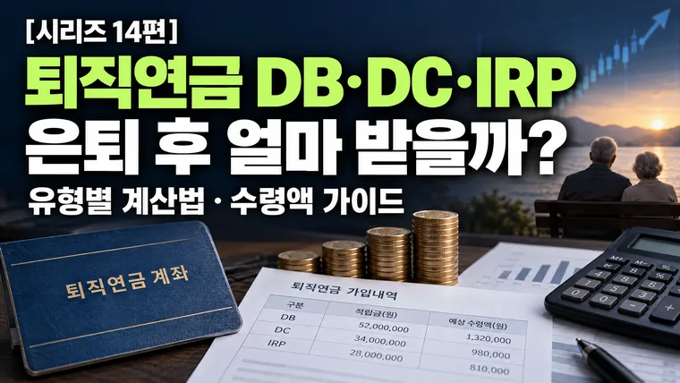

퇴직연금(DB/DC/IRP) 계산법과 은퇴 후 수령액 산정 가이드
퇴직연금은 DB형은 평균임금으로 수령액이 정해지고, DC형은 내가 운용한 결과로 달라집니다. 20년 뒤 받는 2억 원도 물가상승률 연 2~3%를 반영하면 지금 돈으로 약 1억 1,000만~1억 3,500만 원입니다.

직장 생활을 시작하고 바쁜 일상을 보내다 보면 당장의 월급과 연봉 상승에는 큰 관심을 기울이지만, 내 통장 어딘가에서 차곡차곡 쌓이고 있는 '퇴직연금'에는 무관심해지기 쉽습니다. 하지만 은퇴 후 국민연금 개시 시점까지 발생하는 소득 공백기를 안전하게 메워줄 가장 강력한 금융 자산은 단연 퇴직연금입니다.
많은 직장인들이 "회사에서 알아서 퇴직금을 챙겨주겠지"라고 생각하지만, 내가 속한 회사의 퇴직연금 제도가 DB형(확정급여형)인지 DC형(확정기여형)인지, 그리고 별도로 관리하는 IRP(개인형 퇴직연금)를 어떻게 운용하고 있는지에 따라 은퇴 시점에 손에 쥐는 최종 수령액은 수천만 원 이상 벌어질 수 있습니다. 오늘은 퇴직연금 3가지 유형의 계산 구조와 은퇴 후 실질 수령액을 산정하는 방법을 알아보겠습니다.
1. 퇴직연금 3가지 유형(DB·DC·IRP)의 산정 구조 차이
퇴직연금은 자금을 운용하는 주체와 계산 방식에 따라 크게 세 가지 형태로 나누어집니다.
① DB형 (Defined Benefit, 확정급여형)
원리: 근로자가 은퇴할 때 받게 될 퇴직금 액수가 법적으로 미리 확정되어 있는 형태입니다. 회사가 적립금을 금융기관에 맡겨 직접 운용하며, 운용 손익은 전적으로 회사의 책임입니다.
퇴직연금 수령액 = 퇴직 직전 3개월 1일 평균임금 × 30일 × (총 근속일수 ÷ 365일)
특징: 기존의 전통적인 퇴직금 제도와 동일합니다. 임금상승률이 높고 승진 기회가 많은 대기업이나 공기업 직장인에게 유리합니다.
② DC형 (Defined Contribution, 확정기여형)
원리: 회사는 매년 근로자 연간 임금 총액의 1/12(약 8.33%) 이상을 근로자 개인의 퇴직연금 계좌에 입금해 주고, 근로자 본인이 직접 펀드, ETF, 예금 등으로 운용하는 형태입니다.
퇴직연금 수령액 = 매년 회사가 입금한 적립금의 합계 + 개인 운용 누적 수익(손실)
특징: 운용 성과에 따라 최종 수령액이 달라집니다. 임금상승률이 정체되어 있거나 이직이 잦은 직종, 또는 투자 감각이 있어 시중금리보다 높은 수익률을 낼 수 있는 근로자에게 유리할 수 있습니다.
③ IRP (Individual Retirement Pension, 개인형 퇴직연금)
원리: 이직하거나 퇴직할 때 받는 퇴직금을 하나로 모아 관리하고, 본인이 추가로 자금을 납입하여 운용할 수 있는 개인 전용 퇴직 계좌입니다.
특징: 연간 최대 900만 원(연금저축 합산)까지 세액공제 혜택을 제공합니다. 공제율은 총급여 5,500만 원 이하 16.5%, 초과 13.2%입니다. 만 55세 이후 연금 형태로 수령하면 낮은 연금소득세(3.3%~5.5%)가 적용되어 절세 계좌로 꼽힙니다.
| 구분 | 수령액을 정하는 것 | 운용 책임 |
|---|---|---|
| DB형 | 퇴직 직전 평균임금과 근속기간 | 회사 |
| DC형 | 회사 적립금 + 내가 운용한 수익(손실) | 근로자 |
| IRP | 내가 모은 퇴직금 + 추가 납입 + 운용 수익(손실) | 근로자 |
2. 은퇴 후 실질 수령액 산정 시 주의해야 할 2가지 요소
퇴직연금 계산기나 모의 산정 프로그램을 활용할 때 눈앞에 보이는 숫자만 믿으면 안 됩니다. 실제 내 통장에 입금되는 은퇴 자금을 가늠하려면 다음 두 가지를 반드시 감안해야 합니다.
① 퇴직소득세 vs 연금소득세의 차이
퇴직금을 일시금으로 받으면 '퇴직소득세'가 과세됩니다. 근속연수에 따라 공제 혜택이 다르지만, 목돈을 한 번에 출금하면 세금 부담이 커질 수 있습니다. 반면 퇴직금을 IRP 계좌로 받아서 만 55세 이후 연금 형태로 나누어 수령하면 퇴직소득세를 감면받습니다. 연금 수령 10년 차까지는 30%, 11년 차부터는 40% 감면됩니다.
② 물가상승률과 실질 구매력의 착시
현재 30~40대 직장인이 20년 뒤 은퇴 시점에 퇴직연금으로 2억 원을 받는다고 계산되더라도, 물가상승률을 감안하면 그 돈의 가치는 줄어듭니다. 연 2% 상승이면 2억 원은 현재 가치로 약 1억 3,500만 원, 연 3% 상승이면 약 1억 1,000만 원 수준입니다. 따라서 DB형에만 의존하기보다는 물가상승률을 방어할 수 있는 자산 배분 전략이 함께 필요합니다.
· 물가상승률 연 2%: 2억 원 ÷ 1.02의 20제곱 ≈ 약 1억 3,460만 원
· 물가상승률 연 3%: 2억 원 ÷ 1.03의 20제곱 ≈ 약 1억 1,070만 원
3. 내 연금 수령액을 극대화하는 3단계 실전 운용 전략
① 임금상승률과 투자수익률 비교 후 제도 선택(또는 전환)
나의 연간 임금상승률이 시중 예금/투자 수익률보다 높다면 DB형을 유지하는 것이 유리합니다. 반대로 정년이 얼마 남지 않아 임금피크제가 적용되거나 임금상승률이 낮다면 DC형으로 전환하여 적립금을 안전자산과 투자자산으로 분산 운용하는 것이 유리할 수 있습니다. 다만 제도 변경은 회사와 노사 합의가 필요하니 사내 규정을 확인하세요.
② IRP 계좌를 통한 연말정산 세액공제 활용
여윳돈이 있다면 IRP 계좌에 매달 일정 금액을 적립해 연말정산 세액공제 혜택(연 900만 원 납입 시 최대 118만 8,000원~148만 5,000원)을 챙기세요. 환급받은 세금을 다시 연금 계좌에 재투자하는 복리 시스템을 구축할 수 있습니다.
③ 디폴트옵션(사전지정운용제도) 점검
DC형이나 IRP 방치로 인해 적금 수준의 저금리에 자금이 방치되지 않도록, 본인의 위험 성향에 맞는 디폴트옵션 상품(TDF, 포트폴리오형 등)이 잘 지정되어 있는지 정기적으로 확인하세요.
· DB형은 퇴직 직전 평균임금 기준 확정 지급 방식이고, DC형은 매년 적립금을 근로자가 직접 운용하는 방식입니다.
· 만 55세 이후 IRP를 통해 연금으로 나누어 수령하면 퇴직소득세를 30~40% 감면받을 수 있습니다.
· 은퇴 자금 산정 시 단순 수치에 만족하지 않고 물가상승률과 과세 체계를 고려한 실질 수령액을 계산해야 합니다.
이 글의 요율·한도·금액은 2026년 10월 기준입니다. 법령이나 제도가 바뀌면 숫자가 달라질 수 있으니, 신고·가입·계약 전에는 국세청·금융위원회·관련 공단·금융기관에서 최신 기준을 확인하세요. 계산 결과는 참고용입니다.
🔮 다음 편 예고
다음 15편에서는 시리즈의 마지막인 "직장인 현금흐름 자동화: 금융계산기로 완성하는 월별 고정비·가변비 관리 시스템"을 다룹니다. 금융계산기들을 총동원해 매달 나가는 지출을 체계적으로 통제하고 자산을 스노우볼처럼 굴리는 시스템 구축법을 정리해 드립니다.
💬 함께 나누는 질문
현재 가입되어 있는 퇴직연금 유형(DB/DC)을 정확히 알고 계신가요? 노후 대비를 위해 퇴직연금을 어떻게 운용하고 계신가요?